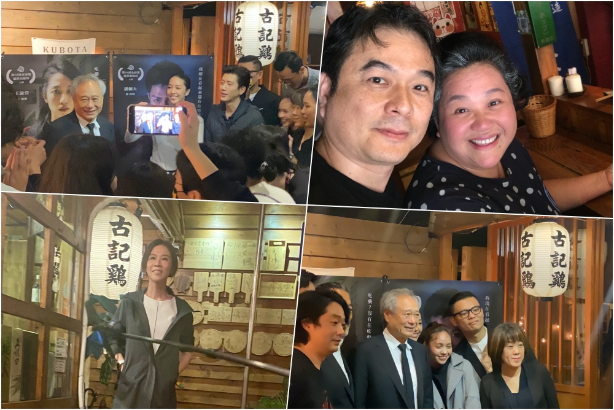
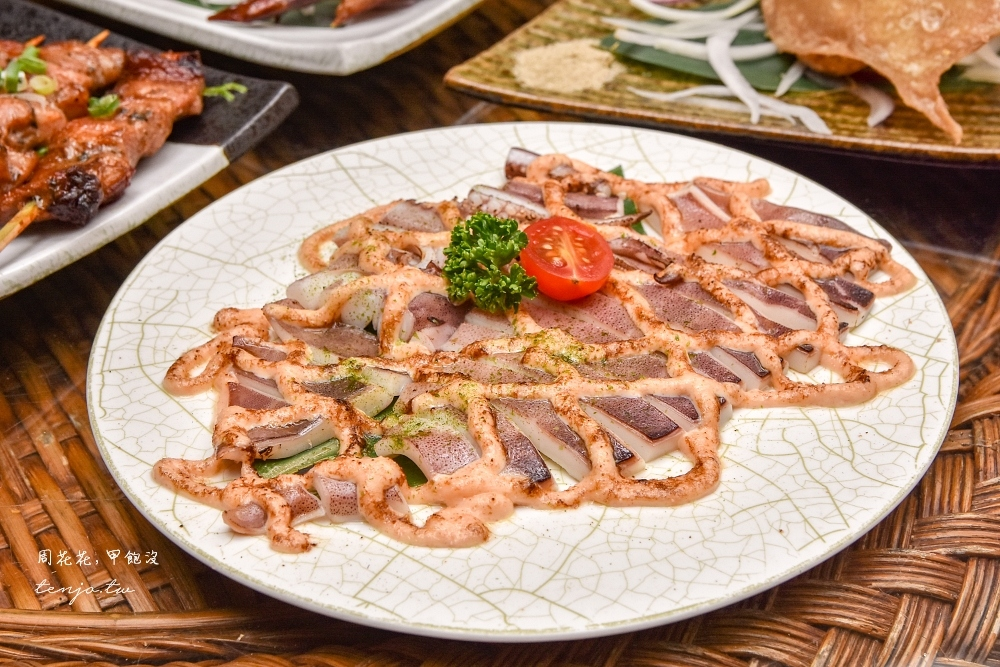

一間很多人都想再去的居酒屋
古記雞的特別之處，在於它同時滿足了很多種需求。座位數多、可以刷卡、有包廂，聚餐時不用擔心找不到位子；菜色又維持在一定水準，點到哪一道都不容易踩雷。以台北居酒屋來說，價位算是親民。
店主賴桑在台北居酒屋圈已經很有名，據說不少廚師也會向他請教。這種口碑讓店裡常有藝人與業界人士出現，牆上掛滿的合照，就是最直接的證明。
古記雞牆面的合照
來源：周花花，甲飽沒 ↗必點的幾道
初次來訪的人不知道怎麼點，可以從下面這幾道開始，大致就能涵蓋店內的風格。
鴉片式黃金泡菜60 元
豆腐乳與蒜頭的比例拿捏得好，鹹度適中，單吃就很下酒。
剝皮辣椒雞翅170 元／兩隻
雞翅烤得香，裡面包著剝皮辣椒，不需要沾醬就很夠味，是許多人心中的第一名。
午仔魚一夜干280 元
一夜干讓魚肉更緊實、鮮甜感更明顯，沾一點胡椒鹽很剛好。
明太子愛上透抽360 元
透抽的熟度控制得宜，鮮甜保留得很好，表面炙燒後的焦香讓人停不下來。

來源：周花花，甲飽沒 ↗適合的場合
下班後想找個地方小酌、和朋友吃宵夜、或是辦小型慶功宴，古記雞都很適合。想要包場或安排客製化菜單，可以直接聯絡店家討論。假日與晚餐時段一位難求，建議提前線上訂位。